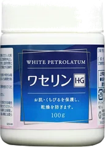
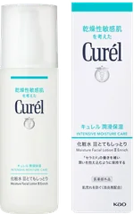
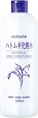
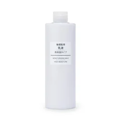
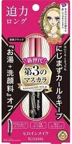
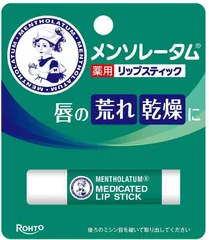

落としすぎ

カウブランド
無添加 メイク落としミルク
150mL
¥1,098税込・出典掲載価格
クチコミの要約
- やわらかくてのびがいいからこすらず落とせる
- 軽いメイクの日はこれで足りるって人が多いのよ
気になる声しっかりメイクの日は落としきれないから軽い日に使うのがいい
販売価格・容量・送料はリンク先でご確認ください
THE COSME EDIT / 2026.09.16
YouTubeの動画で紹介した8品です。ドン・キホーテで買えるシャンプーとして紹介されている人気の品から、秋のパサつきや広がりが気になる人に向けて、楽天のクチコミの声をまとめました。
08 ITEMS 動画で紹介した商品
価格は出典掲載時のものです。楽天の現在価格とは異なる場合があります。

カウブランド
150mL
¥1,098税込・出典掲載価格
クチコミの要約
気になる声しっかりメイクの日は落としきれないから軽い日に使うのがいい
販売価格・容量・送料はリンク先でご確認ください

大洋製薬
100g
¥950税込・出典掲載価格
クチコミの要約
気になる声ベタつくのが苦手なら米粒くらいを薄くのばすといい
販売価格・容量・送料はリンク先でご確認ください

キュレル
150mL
¥2,417税込・出典掲載価格
クチコミの要約
気になる声とろみが欲しい人には物足りないからさっぱり好きの人に
販売価格・容量・送料はリンク先でご確認ください

ソンバーユ
70mL
¥2,200税込・出典掲載価格
クチコミの要約
気になる声重たいのが苦手なら濡れた顔にのばすとなじむ
販売価格・容量・送料はリンク先でご確認ください

ナチュリエ
500mL
¥897税込・出典掲載価格
クチコミの要約
気になる声しみこむ感じは控えめだからバシャバシャ使う人に
販売価格・容量・送料はリンク先でご確認ください

無印良品
400mL
¥1,790税込・出典掲載価格
クチコミの要約
気になる声つけすぎるとぺたつくから少なめに出すのがちょうどいい
販売価格・容量・送料はリンク先でご確認ください

ヒロインメイク
6g×2本
¥2,090税込・出典掲載価格
クチコミの要約
気になる声ダマになりやすいから一度で決めるときれいに仕上がる
販売価格・容量・送料はリンク先でご確認ください

メンソレータム
4g×2本
¥748税込・出典掲載価格
クチコミの要約
気になる声すぐ乾く人もいるから歯みがきのあとに塗るのがちょうどいい
販売価格・容量・送料はリンク先でご確認ください
SOURCE & NOTES
集計期間：2026年9月15日に確認したクチコミです。件数はその商品ページの件数で、ショップによって異なります。
価格は2026年9月15日に楽天の商品ページで確認した税込価格です。ドン・キホーテの店頭の価格や取り扱いは店舗によって異なります。髪質によって感じ方には個人差があります。